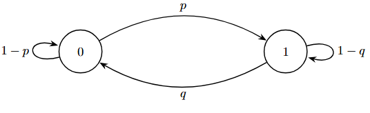

Aula 5
Data: 18/03/2026
Passeios Aleatórios em Grafos Localmente Finitos
\(Def.:\) Um grafo \(G=(V, E)\) consiste em:
\(\qquad\) \(V \neq \emptyset\), enumerável (Conjunto dos vértices de \(G\)).
\(\qquad\) \(E \subseteq \{\{u, v\} : u, v \in V, u \neq v\}\) (conjunto das arestas (elos) de \(G\))
Exemplo: \(V=\{1, 2, 3\}\) e \(E=\{\{1, 2\}, \{2, 3\}\} \subset \{\{1, 2\}, \{2, 3\}, \{1, 3\}\}\).
Neste caso: \(g(1)=1\), \(g(2)=2\), \(g(3)=1\).
Vizinhança e Grau
Dizemos que \(u, v \in V\), com \(u \neq v\), são vizinhos em \(G\) se \(\{u, v\} \in E\).
-
Notação: \(u \sim v\).
-
O grau de um vértice \(v \in V\) é definido por: \(g(v) = |\{u,v : u \sim v\}|\).
\(\hookrightarrow\) # de vizinhos de \(v\).
-
Um grafo \(G\) é localmente finito se \(g(v) < \infty\) para todo \(v \in V\).
\(\hookrightarrow\) Propriedade do vértice.
Exemplos:
1. \(\mathbb{Z}\), como um grafo: \(V=\mathbb{Z}\); \(E = \{ \{u, u+1\} : u \in \mathbb{Z} \} = \bigcup_{u \in \mathbb{Z}} \{u, u+1\}\).
Aqui, \(g(v)=2\) para todo \(v \in \mathbb{Z}\).
2. \(\mathbb{Z}^2\), como um grafo: \(V=\mathbb{Z}^2\);
\(E = \bigcup_{(u, v) \in \mathbb{Z}^2} \{ \{(u, v), (u+1, v)\}, \{(u, v), (u-1, v)\}, \{(u, v), (u, v+1)\}, \{(u, v), (u, v-1)\} \}\)
3. Grafos finitos, i.e., quando V for finito, são localmente finitos.
Passeio Aleatório (P.A.)
Um Passeio Aleatório em um grafo \(G=(V, E)\) localmente finito é uma Cadeia de Markov com espaço de estados \(\mathcal{X}=V\) e matriz de transição \(P(P(x,y))_{x,y \in \mathcal{X}}\) dada por:
Em cada passo, o P.A. muda sua posição atual para um de seus vizinhos, escolhido uniformemente.
Distribuição Estacionária
Proposição: A medida estacionária \(\pi\) de um P.A. em um grafo \(G=(V, E)\) finito é dada por:
Prova:
Logo, \(\pi = \pi P \implies \pi\) é estacionária.
Caso Particular: O Anel (Regularidade)
Caso particular:
(Anel) \(n=6\)
Esse P.A. não é um processo estacionário sob \(\mathbb{P}_0\):
Se fosse estacionário,
O que seria um absurdo!
Se \(g(v) = d\) para todo \(v \in V\), o grafo \(G=(V,E)\) é chamado de d-regular.
\(\hookrightarrow\) O anel é um grafo 2-regular.
Note: Se \(G\) é d-regular, então
\(\hookrightarrow\) \(\pi\) é a dist. uniforme em \(V\).
Irredutibilidade e Período
\((X_t)_{t \ge 0}\) C.M. com matriz \(P = (P(x,y))_{x,y \in \mathcal{X}}\) é irredutível se, \(\forall x, y \in \mathcal{X}, \exists t = t(x,y) \ge 0\) t.q.
\(\hookrightarrow\) \(x\): de onde saio
\(\hookrightarrow\) \(y\): alvo (onde quero ir)
\(\hookrightarrow\) \(t = t(x,y) \ge 0\): um certo nº de passos
\(\hookrightarrow\) \(> 0\):Tem uma chance de acontecer.
Como
A propriedade de ser irredutível, depende apenas da matriz \(P\).
Exemplo 1: P.A. no anel é uma cadeia irredutível. [Verificar]
Exemplo 2:

Se \(0 < p, q < 1\), então a cadeia é irredutível.
Se \(0 < p < 1\) e \(q = 0\):
Esta cadeia não é irredutível, pois \(\mathbb{P}_1(X_t = 0) = 0, \forall t \ge 0\).
\(\hookrightarrow\) assim como o caso \(p = q = 0\).
Dado um estado, com que frequência a cadeia volta nesse estado?
Para cada \(x \in \mathcal{X}\),
\(\hookrightarrow\) Conjunto dos instantes de tempo para os quais é possível a cadeia retornar ao ponto inicial.
Ex: P.A. anel (\(n=6\)): \(\mathcal{T}(0) = \{2, 4, 6, \dots\} \quad \rightarrow\) o período do estado 0 é 2.
O período do estado \(x \in \mathcal{X}\) é definido como máximo divisor comum \(\mathcal{T}(x)\).
\(\hookrightarrow\) Se a cadeia for irredutível todos os estados vão ter o mesmo período.
Prop: Todos os estados de uma C.M. irredutível têm o mesmo período.
O período de uma C.M. irredutível é definido como o período comum a todos os estados.
Dizemos que a cadeia é Aperiódica, se todos os estados têm período 1.
Se a cadeia é não Aperiódica, dizemos que ela é Periódica.